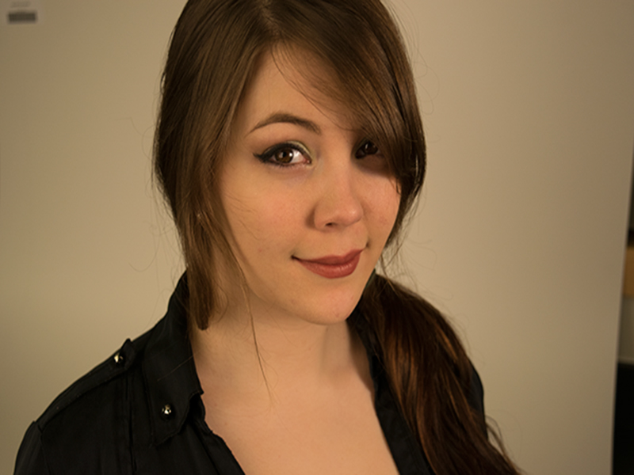

This public service anouncement poster was created as part of the brand identity for Northwest Museum of Arts and Culture. It informs viewers about events that occured during December.This tranformation project was created in Digital Art with tools such as a scanography and Photoshop. My job was to create an original image from scanning chosen objects and using the pen tool to "cut out" these objects. Similar to the previous project, this remix project was a collaboration between myself and another student in Digital Art. Creating custom brushes using drawings on sticky notes, Measure to Construct was a project where I was asked to measure the height of typefaces, strokes, images, etc. from a paged ripped out of a magazine. Next, I had to recreate the page using the information I collected.

Similar to the previous project, this remix project was a collaboration between myself and another student in Digital Art. Creating custom brushes using drawings on sticky notes, Similar to the previous project, this remix project was a collaboration between myself and another student in Digital Art. Creating custom brushes using drawings on sticky notes, Similar to the previous project, this remix project was a collaboration between myself and another student in Digital Art. Creating custom brushes using drawings on sticky notes, Similar to the previous project, this remix project was a collaboration between myself and another student in Digital Art. Creating custom brushes using drawings on sticky notes, Similar to the previous project, this remix project was a collaboration between myself and another student in Digital Art. Creating custom brushes using drawings on sticky notes, Similar to the previous project, this remix project was a collaboration between myself and another student in Digital Art. Creating custom brushes using drawings on sticky notes,